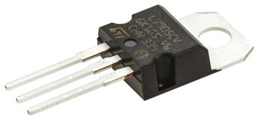
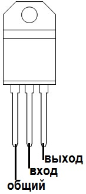
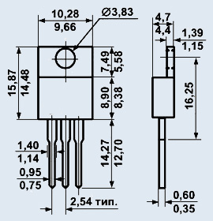
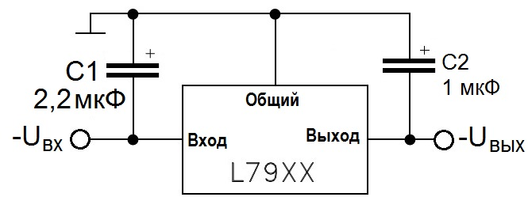

Стабилизатор напряжения L7905CV
Микросхема L7905CV представляет собой стабилизатор напряжения с выходным напряжением -5,0 В отрицательной полярности.
Предназначена для стабилизации отрицательного фиксированного напряжения в узлах и блоках аппаратуры широкого применения.
Имеет встроенную защиту от перегрева и встроенную односкатную защиту от перегрузок.



Рис. 1 - Внешний вид, цоколевка и размеры микросхемы L7905CV
Таблица 1
| Параметр | Значение |
|---|---|
| Максимальное входное напряжение | -35В |
| Минимальное входное напряжение | -7 В |
| Выходное напряжение | -5 В |
| Максимальный выходной ток | 1,5 A |
| Нестабильность выходной нагрузки | 100 mВ |
| Нестабильность выходного напряжения или тока | 100 мВ |
| Подавление пульсаций питания | 60 dB |
| Падение напряжения при Iвых=1А | 1,4 В |
| Ток собственного потребления | 3 мА |
| Рабочая температура | 0...125°C |
| Тип корпуса | TO-220 |
| Масса | не более 2,5 г. |

Рис. 2 - Типовая схема подключения микросхемы L7905CV